Illusion of Teddy Bear (Español)
Quest Principal
| Requisitos | |
|---|---|
| Nivel Base: | 150 |
| Lugar de Inicio: | einbroch 149/242 |
| Recompensas | |
| Experiencia: | 87,500,000 (Base) y 62,500,000 (Job) |
| Items: | 5 Illusion Stones |
- Habla con Young Man (
einbroch 149/242) para iniciar la quest.- 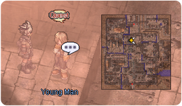
- Usa el Warper > Illusion Dungeons > Illusion of Teddy Bear para ingresar a Mine Dungeon, cerca de la entrada (
ein_dun01 192/78). Habla con Teddy Bear al lado derecho de la entrada.- 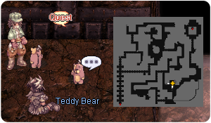
- Habla con los otros Teddy Bear que se encuentran ahí, cerca de la luz verde.
- Haz click en Entrance para entrar a Illusion of Teddy Bear.
- 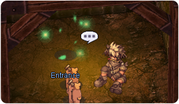
- Camina cerca de Stephen justo en la entrada del dungeon (
ein_d02_i 170/193).- 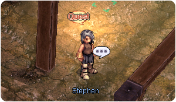
- Habla con el de nuevo.
- Regresa con Young Man, en (
einbroch 149/242). - Habla con Stephen otra vez mas.
- El siguiente lugar a visitar será
ein_d02_i 132/233, al norte del mapa. Camina cerca del indicador de quest para iniciar una escena con diálogos. Asegúrate de eliminar la mob cercana antes de hablar con el NPC o podrían matarte mientras estás viendo los diálogos.- 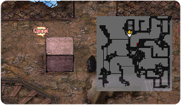
- Necesitarás cazar los siguientes mobs:
- 10 Red Teddy Bear
- 10 Yellow Teddy Bear
- 10 Green Teddy Bear
- 10 White Teddy Bear
- 10 Blue Teddy Bear
- Una vez hayas terminado, regresa con Stephen y habla con el. Serás recompensado con experiencia y 5 Illusion Stones.
Has desbloqueado todas las Daily Quests de Illusion of Teddy Bear.
Quest Diarias
Run Away!!!
| Requisitos | |
|---|---|
| Nivel Base: | 150 |
| Lugar de Inicio: | ein_d02_i 170/193 |
| Recompensas | |
| Experiencia: | 32,500,000 (Base) y 25,000,000 (Job) |
| Items: | 3 Illusion Stones |
- Habla con Stephen y acepta su petición.
- Tendrás que cazar lo siguiente:
- 10 Hardworking Pitman
- 10 Soul Fragment
- 10 Haunted Obsidian
- Regresa con Stephen y cobra tu recompensa.
Shouldn't Exist
| Requisitos | |
|---|---|
| Nivel Base: | 150 |
| Lugar de Inicio: | ein_d02_i 168/206 |
| Recompensas | |
| Experiencia: | 32,500,000 (Base) y 25,000,000 (Job) |
| Items: | 3 Illusion Stones |
- Habla con Gloomy Teddy Bear y acepta su misión.
- Tendrás que cazar lo siguiente:
- 10 Red Teddy Bear
- 10 Yellow Teddy Bear
- 10 Green Teddy Bear
- 10 White Teddy Bear
- 10 Blue Teddy Bear
- Regresa con Gloomy Teddy Bear para recibir tu recompensa.
Let the Light Devour the Darkness
| Requisitos | |
|---|---|
| Nivel Base: | 150 |
| Lugar de Inicio: | ein_d02_i 191/192 |
| Recompensas | |
| Experiencia: | 32,500,000 (Base) y 25,000,000 (Job) |
| Items: | 3 Illusion Stones |
- Habla con Potter y acepta su petición.
- Deberás cazar lo siguiente:
- 1 Shiny Teddy Bear (MVP)
- Regresa con Potter para recibir tu recompensa.
Daily Quest Reset
Como mecánica exclusiva de NovaRO, puedes reiniciar los cooldowns de tus daily quests.
Esto significa que eres capaz de farmear cuantas Illusion Stones quieras con un único personaje, sin necesidad de crear personajes adicionales para evitar los cooldowns de las quests.
Para reiniciarlos, habla con Osmundi. Puedes encontrarlo dentro de cada Illusion Dungeon en las siguientes ubicaciones:
- Illusion of Moonlight .
- Illusion of Vampire .
- Illusion of Frozen .
- Illusion of Abyss .
- Illusion of Teddy Bear .
- Illusion of Luanda .
- Illusion of Labyrinth .
- Illusion of Underwater .
Los reinicios se separan en 3 categorías distintas acorde al grupo de dificultad en que cada dungeon se encuentra. Cada reset te recompensará con una cantidad determinada de  Illusion Stones:
Illusion Stones:
- Categoría 1: Illusion of Moonlight, Illusion of Vampire e Illusion of Frozen.
- Recompensa al resetear: 12 Illusion Stone
- Recompensa al resetear: 12
- Categoría 2: Illusion of Abyss, Illusion of Teddy Bear e Illusion of Underwater - Primer Piso.
- Recompensa al resetear: 18 Illusion Stone
- Recompensa al resetear: 18
- Categoría 3: Illusion of Luanda, Illusion of Labyrinth e Illusion of Underwater - Segundo Piso.
- Recompensa al resetear: 24 Illusion Stone
- Recompensa al resetear: 24
El primer reinicio del día, para cada grupo, te otorgará 6 Illusion Stone adicionales.
Una vez completes las dailies de cualquiera de las categorías de arriba, puedes reiniciar las daily quest de dicha categoría. Tras reiniciarlas, las quests no volverán a dar mas experiencia hasta que haya transcurrido el tiempo para su reinicio normal.
Cada categoría puede ser completada y reiniciada por separado, pero no puedes reiniciar las dailies de un Illusion Dungeon en particular sin haber completado las otras dailies de su respectiva categoría.
Mob
| Imagen | Nombre | Nivel | HP | Tamaño / Raza / Elemento |
|---|---|---|---|---|
| 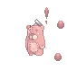 | Red Teddy Bear | 155 | 328,072 | Small / Formless / Fire 1 |
| 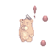 | Yellow Teddy Bear | 155 | 294,044 | Small / Formless / Wind 1 |
| 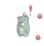 | Green Teddy Bear | 157 | 331,960 | Small / Formless / Poison 1 |
| 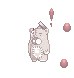 | White Teddy Bear | 155 | 311,841 | Small / Formless / Neutral 1 |
| 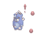 | Blue Teddy Bear | 152 | 280,657 | Small / Formless / Water 1 |
| 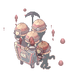 | Hardworking Pitman | 154 | 305,605 | Large / Demon / Earth 2 |
| 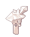 | Soul Fragment | 153 | 290,324 | Small / Formless / Neutral 2 |
| 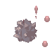 | Haunted Obsidian | 156 | 318,593 | Small / Formless / Earth 2 |
| 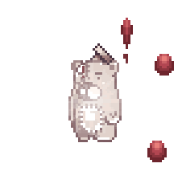 |  Shining Teddy Bear Shining Teddy Bear
|
160 | 10,724,874 | Large / Formless / Holy 4 |
MVP Spawn
Para invocar al MVP Teddy Bear, hay que matar 2500 mobs en el dungeon. Habrá un anuncio en el mapa en cuanto aparezca.
Cartas
| Carta | Va en: | Efecto |
|---|---|---|
| Arma |
MATK +5. | |
| Armadura |
HIT +10, ATK +5%. | |
| Arma |
MATK + 5. | |
| Garment |
FLEE +3, incrementa la velocidad de ataque en 1% (reducción de delay after attack en 1%) por cada 10 puntos base de AGI. | |
| Shoes |
Incrementa el consumo de SP de las habilidades en 10%. Incrementa el daño mágico de propiedad holy en 3% por cada nivel de refine. |
Equipo
Habla con Illusion Teddy Bear dentro del dungeon, al sur de la entrada (ein_d02_i 177/158). El se encarga de fabricar los Objetos Illusion de este dungeon.
Para cada objeto, te pedirá Illusion Stones, un Equipo Base (que puede requerir cierto nivel de refine) y objetos varios que caen por drop dentro del dungeon.
Aquí puedes encontrar los objetos que puedes crear, su efecto y que piden para ser fabricados:
| Imagen | Nombre | Descripción | Creación |
|---|---|---|---|
| 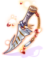 | 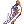 Illusion Counter Dagger [2] |
CRIT + 90.
Incrementa la velocidad de ataque en 10% (reduce el after attack delay en 10%).
Ataque: 170 Peso: 90 Nivel del Arma: 4 Nivel Mínimo: 120 Equipable por: Mage classes, Soul Linker classes.
|
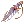 +7 Dagger of Counter 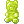 75 Green Teddy Bears 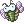 50 Fine Chonchon Dolls |
| 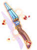 | 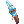 Illusion Gate Keeper-DD [2] |
Ataque de salpicadura, DEX + 1.
ATK + 10%.
Ataque: 240 Peso: 130 Nivel del Arma: 4 Nivel Mínimo: 120 Equipable por: Rebellion.
|
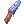 +7 Gate Keeper-DD 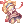 75 Gothic Porcelain Dolls 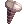 150 Nazarian Soul Stones |
| 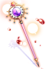 | Illusion Survivor's Staff [2] |
INT + 2, DEX + 2.
MATK + 50.
Ataque: 100 Peso: 120 Nivel del Arma: 4 Nivel Mínimo: 120 Equipable por: Mage classes, Soul Linker classes, Acolyte classes.
|
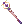 +7 Survivor's Rod (Dex) [1] 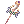 +7 Survivor's Rod (Int) [1] 125 Illusion Stones |
| 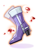 | 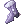 Illusion Boots [1] |
Incrementa la velocidad de ataque en 1% (reduce el after attack delay en 1%) por cada nivel de refine.
Defensa: 16 Peso: 60 Nivel Mínimo: 100 Equipable por: Swordsman classes, Merchant classes, Thief classes, Archer classes, Gunslinger classes, Star Gladiator classes.
|
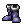 +7 Boots [1] |
| Illusion Hot-blooded Headband [2] |
STR + 2.
Defensa: 3 Location: Upper Peso: 10 Nivel Mínimo: 120 Equipable por: Todos excepto Novice.
|
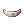 +7 Hot-blooded Headband 115 Illusion Stones |